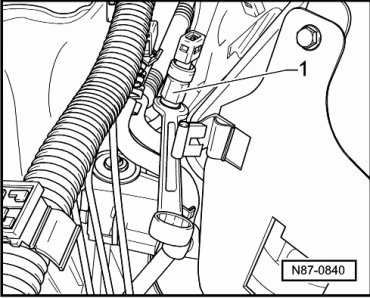

High Pressure Sensor / Switch: Service and Repair
High Pressure Sensor
Removing
- Remove air intake shroud. Refer to --> [ Intake Housing ] Service and Repair.
- Separator connectors.

- Remove High Pressure Sensor (G65) - 1 - from coolant line in plenum chamber.
• Counterhold the threaded connection with a suitable tool when loosening and tightening.
Installing
Installation is carried out in the reverse order, when doing this note the following:
- Replace O-ring.
High Pressure Sensor (G65) torque is 8 ± 1 Nm.
• Counterhold the threaded connection with a suitable tool when loosening and tightening.